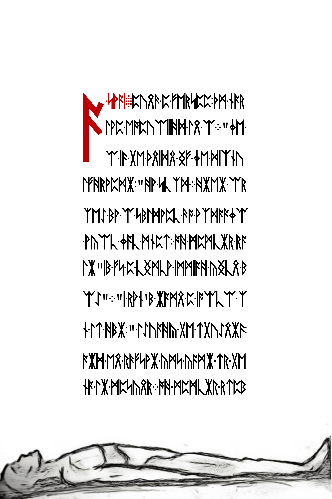

Reclining figures and the proposed Jung comparison
Compare the figures on four manuscript pages and follow the published Red Book attribution to its stated sources.
On this page
A reclining human figure appears at the bottom of LP1-14–16 and LP2-22. These pages give researchers a specific image to compare across releases. A published comparison with C. G. Jung's Red Book is also discussed below; it remains separate from the observations visible in the manuscript originals.
Find the manuscript figures
On LP1-14–16 the head is on the left and the feet on the right. LP2-22 reverses that orientation. Opposite orientation alone does not establish that one image is an exact reflection of another.


LP1-14 and LP1-15 contain the second koan. LP1-16 contains the final instruction and its numerical material. On LP2-22, the figure lies below a separate three-crossbar drawing; the closing-page study locates both details.
The published Jung comparison
In his 11 February 2020 essay, under “Jung's Daniel,” Frank G. Bosman discusses a proposed resemblance between the reclining figure and an image in Jung's Red Book. He gives two locators: page 44 in the original sequence and page 281 in the 2009 edited text. These are locators reported by Bosman, not an independently verified source-image attribution by Liberpedia.
The distinction matters: a published comparison establishes that someone proposed the connection. Confirming the source of a drawing requires inspecting the cited image and documenting the matching details. Identifying a borrowed drawing would still not establish that Jung's surrounding prose supplies a cipher key.
Which book is meant?
The Red Book and Liber Novus name Jung's work. The Library of Congress exhibition explains that Liber Novus, meaning “New Book,” appears on its spine. Jung developed the work from earlier notebooks, revising the material and combining calligraphy with paintings, decorated initials, and borders.
Liber Primus is also a section title within Jung's work: the Oregon Friends of Jung library record lists Liber Primus, Liber Secundus, and Scrutinies among its contents. That internal title and Cicada's manuscript title refer to different works. A shared name is a reason to investigate a possible reference, not evidence that their page numbers or text can be interchanged.
Illustrated edition or Reader's Edition?
The Philemon Foundation's publication record distinguishes these editions. Record the ISBN as well as the title when citing a proposed image source:
- 2009 illustrated edition
- W. W. Norton, edited and introduced by Sonu Shamdasani; translated by Mark Kyburz, John Peck, and Shamdasani. ISBN
9780393065671. The Foundation lists 404 pages and illustrations. - 2012 Reader's Edition
- A text edition containing the text, introduction, and scholarly apparatus. ISBN
9780393089080. Do not assume it reproduces every manuscript image or uses the illustrated edition's pagination.
For freely accessible examples of Jung's illustrated pages, the Library of Congress exhibition above supplies labeled enlargements. Its selection does not include the page 44 image cited by Bosman, so it establishes the book's visual context rather than verifying this particular comparison.
How to check the proposed source
- Identify the edition. Record the title, editor or publisher, year, and whether the locator refers to a manuscript page, a printed page, or a scan's image number. Do not interchange Bosman's two page numbers.
- Compare the whole composition. Examine the head, limbs, body contour, and surrounding marks. A generally reclining posture is less specific than a matching arrangement of these details.
- Record transformations. Compare the unaltered images first. Label any reflection, rotation, crop, or change in proportions used for an overlay, and retain the originals.
- Separate findings. State which features match, which differ, and whether the comparison identifies a composition or a particular digital reproduction. Keep any proposed textual or numerical operation in a separate test.
The cropped views above leave the original JPEG bytes unchanged. The download catalogue provides original files and checksums. For other candidate sources, use works and possible influences; for a reproducible test record, follow documenting an attempt.
Manuscript pages discussed
LP1-14 · LP1-15 · LP1-16 · LP2-22